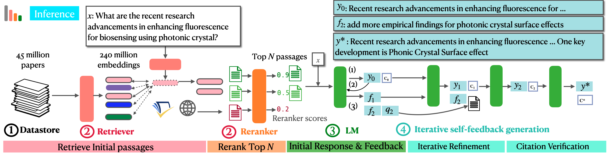
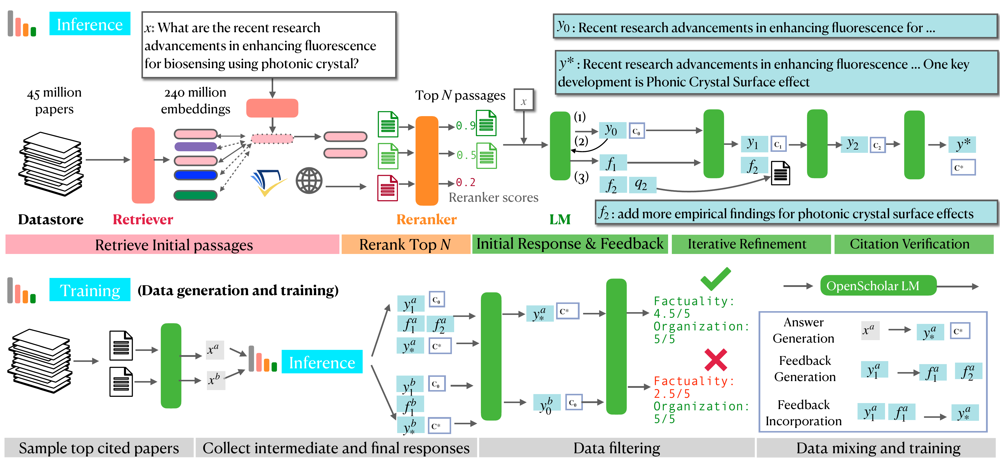
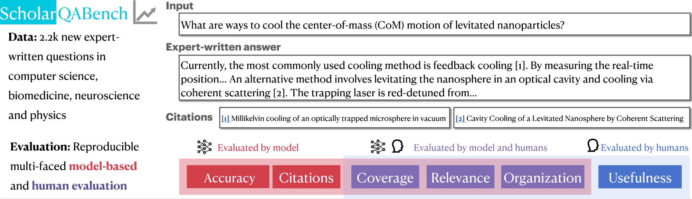
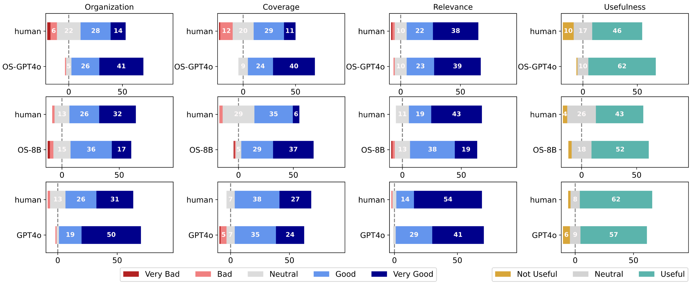
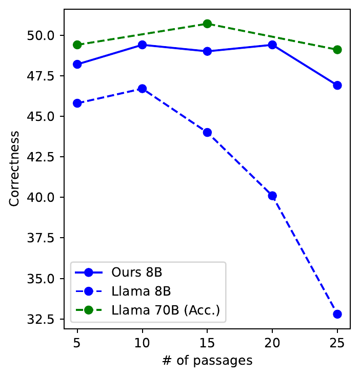
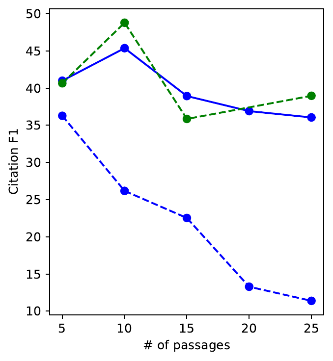

OpenScholar
从 4,500 万篇开放论文中检索证据，经领域重排序、自反馈补检索与引用归因，生成可追溯的科学文献综合。这里同时拆解论文、benchmark、源码和实际复现边界。
先给结论：它是什么，又不是什么
一句话：OpenScholar 是一个面向开放科学文献的“领域 RAG 系统 + 专用 8B 模型 + 数据仓库 + benchmark”，目标是回答需要多篇论文支持的科学问题，并把答案中的论断绑定到可检查的文献段落。
它最重要的贡献不是发明了某个全新的神经网络，而是把语料、检索、重排序、生成、反馈、补检索、引用归因、训练和评测连成一条开放链路。
开放获取论文，来自 peS2o / S2ORC 系谱。
Nature 版本报告的段落表示规模；不同版本写作 234–237M。
基于 Llama 3.1 8B 的领域化生成模型。
总问题数，另有 208 个专家长答案。
它是：可替换生成后端的文献综合管线。后端可以是 OpenScholar-8B、Llama 70B 或 GPT-4o；系统价值不只存在于 8B 权重中。
它不是：端到端自动科研 Agent。它不提出并执行实验，不运行代码，不验证研究结论的科学有效性，也没有长期研究记忆。
它试图解决的任务
给定科学问题 x，系统需要找出相关论文、综合结论、生成长答案 y，并给出一组引用 C。关键要求不是“列出一些论文”，而是每个引用都应链接到支持答案中某段文字的具体文献段落。
检索难题
自然语言问题很长且抽象；真正相关的证据可能位于数千万论文的正文深处，而非标题或摘要。
综合难题
答案往往跨多篇论文，需要组织异质证据、覆盖不同方法与结果，又不能把检索片段逐条堆砌。
归因难题
“引用是真论文”仍不够：引用内容必须支持它旁边的 claim，而且应覆盖所有需要证据的句子。
理解 OpenScholar 的钥匙：它优化的是三角关系——coverage（找得广）、correctness（说得对）和 attribution（引得准）。只追求其中一个都不够：PaperQA2 的引用较准但覆盖较窄；裸 LLM 写得流畅但引用大量虚构；简单 RAG 则可能把无关上下文塞给模型。
总体架构：两条链路、一个飞轮


实时回答链
围绕一个问题运行，重排候选、生成初稿、最多处理三条反馈，必要时继续检索，最后做引用归因。
能力蒸馏链
用更强的 Llama 3.1 70B 运行同一管线，保存问题、初稿、反馈、修订和最终答案，再训练较小的 8B 模型。
数据仓库与检索：真正的系统地基
4.1 OSDS 是怎样构造的
来源
使用 peS2o 中来自 S2ORC 的开放获取论文。v3 覆盖截至 2024 年 10 月约 4,500 万篇论文；主实验仍使用较早的 v2（截至 2023 年 1 月），因为 benchmark 和模型构建早于 v3。
切块
把正文按空白切成约 250 词的块，并把论文标题拼到每个块前面。这样每个 passage 同时携带局部证据与论文身份。
向量化
用持续在 peS2o 上无监督预训练的 Contriever 编码段落，形成两亿级 dense embeddings。Nature 正文写 236M；arXiv 不同段落写 234M 或 237M，应理解为版本差异与取整，而非三个独立语料库。
4.2 三路召回不是同一种搜索
| 来源 | 怎么搜 | 优势 | 主要缺口 |
|---|---|---|---|
| OSDS dense retrieval | 110M bi-encoder 编码问题，近邻检索 Top 100 passages | 正文级、规模大、开放可复现 | 语义相似不等于代表性，且索引极重 |
| Semantic Scholar API | LM 先把长问题改写为关键词；每个关键词取按引用量排序的 Top 10 论文 | 补充论文元数据、摘要与高引用工作 | 引用量偏置，对新论文不友好 |
| You.com Web | 限制到 arXiv、PubMed 等学术站点取 Top 10；开放则取全文，否则取摘要 | 补充更近期或 OSDS 外的内容 | 论文实验中 web-only 最弱，噪声较大 |
4.3 为什么必须再排序
Bi-encoder 把问题和段落分别编码，适合在海量语料中快速召回，却无法细致建模二者交互。OpenScholar 因此训练 340M 的 cross-encoder：把问题与候选段落联合编码，再输出相关性分数。
Reranker 的训练数据由 Llama 3 70B Instruct 合成：根据论文摘要生成 query，对召回段落按 1–5 打分，4/5 为正例、1/2 为负例、3 丢弃，然后微调 BGE reranker。
最关键的消融：移除 reranker 会造成最大的综合性能下降之一。这说明 OpenScholar 的优势不是“检索越多越好”，而是先高召回，再把少量真正有用的 passage 交给生成器。
推理循环：模型如何发现自己没答好
生成初稿 y₀
生成器读取问题和 Top N passages，输出长答案，并用诸如 [1] 的标记把句子连接到传入段落。
生成自然语言反馈 F={f₁…fₜ}
模型检查组织、覆盖、错误与缺漏，最多生成三条反馈。与固定标签式 verifier 不同，反馈可以是自由文本。
判断是否需要新证据
如果只是结构或措辞问题，直接局部编辑；如果反馈指出缺少某类结果，模型同时生成一条自包含检索 query。
补检索并顺序修订
新 query 经检索与重排序得到补充 passages。系统把当前答案、反馈与新证据一起交给模型，只修改反馈涉及部分，并避免丢失原有内容。
事后引用归因
逐段检查需要引用的陈述是否有 passage 支撑；缺少引用时插入合适引用。注意：实现不会删除没有证据的句子，这不是严格的 entailment gate。
好处：初次检索不必一次覆盖全部子主题。答案暴露的缺口可以被转写为新 query，让检索需求随生成过程自适应变化。
不能误解为验证器：“模型批评模型”仍可能共同犯错；最后一步主要补引用，而不是以外部规则拒绝所有 unsupported claims。
训练数据飞轮：把昂贵推理蒸馏进 8B
三种监督信号
答案生成
学习根据问题和检索证据写出带引用的最终答案。
反馈生成
学习识别初稿的覆盖、组织与证据缺口。
反馈吸收
学习在不破坏其余内容的前提下做局部修订。
过滤为什么重要
终稿并不天然优于初稿：pairwise filtering 发现约 20% 的样本中，初稿因避免过度编辑和重复而更好。系统先在 y₀ 与 yₜ 中择优，再按组织、事实精度与引用准确性打 1–5 分，两项均至少 4.5 才保留。
资料中的数字冲突：论文与 Nature 方法写训练使用 130,000 instances，Hugging Face 数据集也显示约 130k 行；官方 GitHub README 却写“13k”。结合实际数据，应把 README 的 13k 视为文档笔误。
最终数据约一半来自科学任务、一半来自通用指令数据；还加入基于高引用论文合成的事实验证与布尔问答。训练采用 Llama 3.1 8B Instruct、两轮、修改版 torchtune；README 报告使用 8 张 A100。
ScholarQABench：它究竟测了什么

| 子集 | 规模 | 领域 / 形式 | 答案情况 | 主要评价 |
|---|---|---|---|---|
| SciFact | 208 | 生物医学；真假判断 | 已有单篇数据改成开放检索 | Accuracy + Citation F1 |
| PubMedQA | 843 | 生物医学；Yes / No | 移除原摘要，要求自己检索 | Accuracy + Citation F1 |
| QASA | 1,375 | 计算机科学；单篇长答案 | 端到端 QA | ROUGE-L + Citation F1 |
| ScholarQA-CS | 100 | 计算机科学；多篇长答案 | 平均 4.4 个专家 key ingredients，每项约 4.4 条证据 | 专家 rubric correctness + Citation F1 |
| ScholarQA-Bio | 1,451 | 生物医学；多篇问题 | 只有问题，无专家答案 | Citation F1 |
| ScholarQA-Neuro | 1,308 | 神经科学；多篇问题 | 只有问题，无专家答案 | Citation F1 |
| ScholarQA-Multi | 108 | CS、物理、生物医学；多篇长答案 | 专家问题、答案与逐句引用 | Citation + LLM judge + 人评 |
四类指标不能混为一个“正确率”
Correctness
短任务用 accuracy，QASA 用 ROUGE-L，Scholar-CS 用 rubric score；它们数值同列但含义不同。
Citation F1
句子是否需要引用、现有引用是否支持且必要；由 AttrScore 等自动判定。
LLM quality
Prometheus 以 1–5 分评组织、覆盖和相关性，再取平均。
Expert preference
专家对模型答案与人工答案做细粒度评分和 win/tie/lose。
Scholar-CS rubric：40% 来自长度、专业性、引用和 excerpt 等通用标准，60% 来自专家列出的内容要点；must-have 权重是 nice-to-have 的两倍。这个设计比只看参考答案相似度丰富，但也可能奖励更长、覆盖更多的回答。
实验结果：系统优势从哪里来
8.1 多篇综合主结果
| 系统 | Scholar-CS Rubric ↑ | CS Citation F1 ↑ | Scholar-Multi LLM ↑ | Multi Citation F1 ↑ | 估算 USD / query |
|---|---|---|---|---|---|
| GPT-4o（无检索） | 45.0 | 0.1 | 4.16 | 0.7 | 0.006 |
| GPT-4o + 标准 OSDS RAG | 52.4 | 31.1 | 4.03 | 31.5 | 0.01 |
| OpenScholar-GPT-4o | 57.7 | 39.5 | 4.51 | 37.5 | 0.05 |
| OpenScholar-8B | 51.1 | 47.9 | 4.12 | 42.8 | 0.003 |
| PaperQA2 | 45.6 | 48.0 | 3.82 | 47.2 | 0.3–2.3 |
| Perplexity Pro | 40.0 | — | 4.15 | — | 0.002* |
* Perplexity 成本按每月 20 美元除以当时 9,000 次额度估算；界面无法导出 citation snippets，因此引用指标缺失。
OpenScholar-GPT-4o 相比裸 GPT-4o 的 Scholar-CS rubric 提升。
Nature 摘要报告的困难多篇任务 correctness 相对优势。
OS-8B 的估算单题成本显著低于 PaperQA2，但不含建设超大索引的固定成本。
8.2 “裸模型会编造引用”具体是什么意思
| 模型 | 计算机科学虚构标题率 | 生物医学虚构标题率 | 说明 |
|---|---|---|---|
| OpenScholar-8B | 0% | 0% | 引用从检索结果中选择，因此标题真实 |
| Llama 3.1 8B | 92.1% | 97.6% | 凭参数记忆直接生成论文标题 |
| Llama 3.1 70B | 78.1% | 96.6% | 更大模型仍无法可靠记住长尾文献 |
| GPT-4o | 78.7% | 94.8% | 标题看似可信，但多数不存在 |
准确措辞：这是“无检索模型生成的论文标题是否真实”的统计，不等于这些模型 78–98% 的所有事实都错，也不等于 OpenScholar 的每个 claim 都被正确支持。OpenScholar 消除了虚构标题，却仍可能引用真实但不相关、过时或不代表性的论文。
8.3 人类偏好实验
| 系统 | 组织 1–5 | 覆盖 1–5 | 相关性 1–5 | Useful | 相对人工 Win / Tie / Lose |
|---|---|---|---|---|---|
| GPT-4o | 4.63 | 4.06 | 4.50 | 69.7% | 31.9 / 13.8 / 54.2 |
| OpenScholar-8B | 3.82 | 4.30 | 4.00 | 72.1% | 50.8 / 12.3 / 36.9 |
| OpenScholar-GPT-4o | 4.47 | 4.38 | 4.30 | 80.0% | 70.0 / 6.8 / 23.2 |

8.4 上下文并非越多越好


普通 Llama 3.1 8B 从 Top 5 增到 Top 10 后改善，但继续增加会损害正确性和引用；训练后的 OpenScholar-8B 对更多上下文更稳健。拥有 128K context window 不代表模型能有效使用任意数量的证据。
如何正确解读“胜过 GPT-4o 和专家”
“8B 胜过 GPT-4o”是系统比较，不是裸模型比较
OpenScholar-8B 背后有 4,500 万篇语料、专用 retriever、reranker、反馈与引用归因；对手的裸 GPT-4o 没有检索。结论应是领域基础设施可以压过参数规模，而不是“8B 的一般智能更强”。
“胜过专家”主要是偏好与覆盖，不是全面科学正确性
模型答案平均更长、引用更多。Scholar-CS 中人工答案平均约 424 词，OS-GPT-4o 约 1,447 词，OS-8B 约 706 词。专家偏好更常提到 coverage；对每个 claim 的事实性与引用并未在偏好任务中逐条人工审计。
PaperQA2 比较不是完全原生配置
PaperQA2 没公开自己的检索库，作者把 OpenScholar 检索到的论文 PDF 提供给 PaperQA2；这有利于控制语料差异，却不等于比较其生产服务的完整检索能力。PaperQA2 引用更准，但往往只依赖少数论文，覆盖分较低。
LLM judge 带来可扩展性，也带来偏差
Scholar-CS 由 GPT-4o 按专家 rubric 打分，Scholar-Multi 用 Prometheus。论文承认自动评估可能偏好背景、展开和较长回答，且 sentence-level citation metric 对跨句证据可能过严。
成本表没有计入基础设施固定成本
“每题 0.003 美元”主要估算生成推理；没有摊入 520–692 GiB 数据仓库、两亿级向量索引、CPU 内存、索引构建和维护。因此它说明边际推理便宜，不代表个人部署只需几厘钱。
最稳妥的实验结论
在开放科学文献综合中，专用语料 + 领域检索 + 强重排序 + 反馈补检索 + 引用归因比只依赖参数记忆可靠得多；同样的管线既能增强 GPT-4o，也能把能力蒸馏给开放 8B 模型。OpenScholar 的胜利首先是系统工程与信息基础设施的胜利。
源码结构与实际复现边界
| 位置 | 作用 | 阅读重点 |
|---|---|---|
run.py | CLI 入口，加载模型、参数和输入数据 | top_n、feedback、posthoc_at、ranking_ce 等开关 |
src/open_scholar.py | 核心生成、重排、反馈、补检索和归因循环 | run() 及 feedback / attribution 函数 |
src/instructions.py | 初稿、反馈、修订和事后归因 prompts | 反馈要求同时产生可独立搜索的新问题 |
src/use_search_apis.py | Semantic Scholar 与网页搜索候选生成 | 外部 API key、摘要/全文的格式统一 |
retriever/ | Contriever 训练、FAISS 索引与检索服务 | 海量 shard、CPU 内存和离线召回 |
training/ | 修改版 torchtune 训练树 | 并非轻量脚本，而是一份嵌入仓库的训练框架快照 |
ScholarQABench/scripts/ | rubric、Prometheus、citation correctness 评测 | 不同指标不是统一 accuracy |
实际运行路径
# 最小标准 RAG：需要预先准备好带 ctxs 的输入
python run.py --input_file INPUT.jsonl \
--model_name OpenScholar/OpenScholar_Llama-3.1-8B \
--use_contexts --top_n 10 --llama3 --zero_shot \
--output_file OUTPUT.jsonl
# 完整思路对应的实际 parser flags
--ranking_ce --feedback --posthoc_at --ss_retriever \
--use_abstract --norm_cite --max_per_paper 3“开源”不等于一键运行
主实验的初始召回大量采用预计算结果。完整 OSDS v2 约 558 GB，v3 约 744 GB；官方也明确提示两亿级 embedding 需要大量 CPU 内存。
论文算法与当前代码存在工程落差
反馈循环中的本地 peS2o 补检索调用在当前 open_scholar.py 中被注释；运行时主要依赖已有 ctxs，补检索需要启用 Semantic Scholar 或自行接上检索服务。
README 完整命令有参数拼写错误
README 示例写 --posthoc 与 --feedack，实际 parser 是 --posthoc_at 与 --feedback；照抄文档不会启动预期功能。
max_per_paper 实现疑似 off-by-one
代码在计数 > max_per_paper 时才跳过，因此设为 3 可能保留第 4 个 passage。论文描述的“每篇最多三段”和当前实现并不完全一致。
推荐复现层级：先用已发布 benchmark retrieval results + OpenScholar-8B/任意 API 后端验证生成流程；再下载 436 MB retriever 做小语料实验；最后才考虑完整 OSDS。不要一开始就把“复现论文”理解为下载 700 GB 数据。
局限、研究位置与下一步
代表性检索不足
相似度高不代表 seminal、最新或方法学最可靠。作者建议引入引用图、发表时间等元数据。
开放获取偏差
不使用受版权保护全文；在封闭出版比例高的领域，系统看到的文献不是完整学术世界。
8B 仍会写错
小模型的指令遵循和科学知识容量有限；真实论文标题不等于陈述正确或证据充分。
benchmark 小且静态
有专家答案的长任务只有百级，时间截点在 2024 年；公开后还存在训练污染风险。
领域覆盖有限
重点是 CS、生物医学、神经科学与物理，没有社会科学等不同证据范式的领域。
缺少长期知识状态
每次 query 基本独立，没有持续更新的研究记忆、证据版本和跨项目引用账本。
在自动科研版图中的准确位置
OpenScholar 位于第二层，是后两层非常重要的 literature substrate，但不能单独代表后两层。它更像“科学知识访问与综合引擎”，而不是拥有研究目标与行动闭环的 Agent。
最值得继承的四个设计
开放证据层
语料和 passage ID 可追溯，允许重跑与审计。
反馈驱动检索
让生成暴露的信息缺口反过来产生新 query。
轨迹蒸馏
不仅蒸馏终稿，也训练反馈生成和反馈吸收。
分面评测
分开测 correctness、coverage、writing 与 citation。
继续研究的方向：时间感知与增量索引、引用网络与研究类型建模、支持/反驳证据对齐、来源质量与偏差控制、claim-level 人工审计、持续研究记忆，以及把“真实但弱相关的引用”升级为“最代表性且能直接支持 claim 的引用”。
本地材料地图
35 页 Nature 正式版本，结果数字以此为准。
完整实验细节、prompts、附表和案例。
arXiv 主 TeX，可追踪表格和早期表述。
运行时主循环：重排、生成、反馈与归因。
系统行为的 prompt 层定义。
各子集问题、人工答案、rubric 元数据。
人工评测界面和结果。
本地已完整保存的 130k 训练数据。
本地已完整保存的 436 MB 检索器。
归档范围、提交哈希、LFS 状态和 SHA-256。
最短阅读路线
- 先读本页的“总体架构、数据与检索、自反馈生成”。
- 再看 Nature PDF 的 Fig. 1、Table 1、Table 4 和 Limitations。
- 打开
open_scholar.py::run()，把论文的五步循环映射到真实代码。 - 最后看 ScholarQABench 的数据格式与评测脚本，理解论文中的“correctness”究竟如何计算。